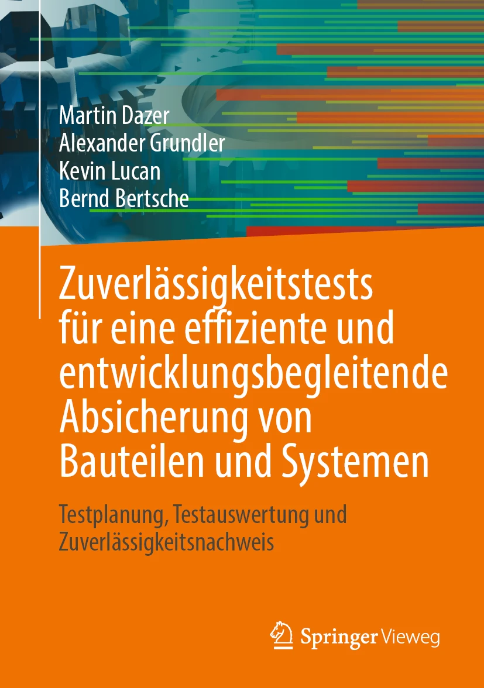

Zuverlässigkeitstests
Testplanung, Testauswertung und Zuverlässigkeitsnachweis.
RelTest unterstützt Unternehmen bei Produktzuverlässigkeit, Versuchsplanung, Datenanalyse und technischer Absicherung. Die Leistungen sind klar buchbar, die fachliche Tiefe ist belegbar.
Für konkrete technische Fragestellungen in Entwicklung, Erprobung und Qualität.
Für Unternehmen, die Zuverlässigkeit dauerhaft methodisch absichern möchten.
Vor Ort im Team oder digital für Ingenieurinnen und Ingenieure.

Testplanung, Testauswertung und Zuverlässigkeitsnachweis.
Grundlagen und Vertiefung für technische Zuverlässigkeit.